How Burrow casts
An ant nest, a termite mound or a root system, cast in metal and set in a block of frosted resin on a plinth, under one gallery spot in a dark room. Each piece plays out as a cycle: the plinth stands empty, molten metal pours in and finds the tunnels, it cools as the resin rises around it, and the finished piece rests until a new one lifts it away. Here is how the burrows are grown, baked into a distance volume that also knows when the metal reaches each point, poured, and drawn through the block by a raymarch of their own: refraction, one bounce inside, frost that blurs by depth, a beam of lit dust, and the sound of it.
See it live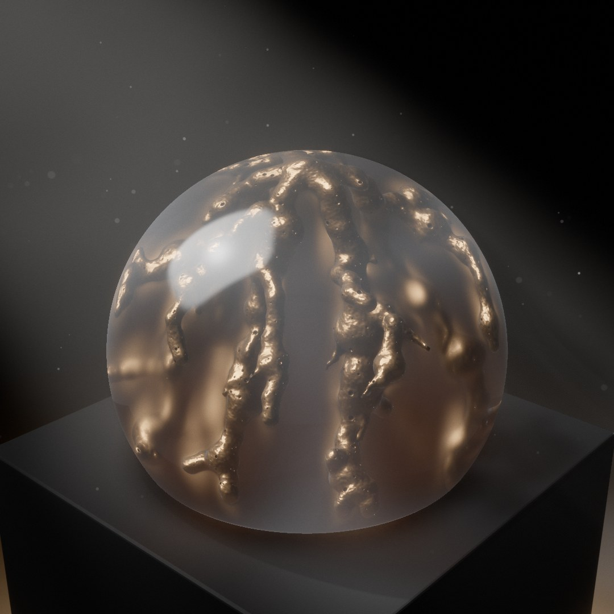
A cast of a hole
Entomologists map ant nests by pouring molten aluminium into the entrance: the metal runs down every gallery and fills every chamber, and once it has cooled the soil is dug away to leave a metal cast of the hole. The casts are strange, beautiful objects, part root, part coral, and they end up on plinths. The day makes one, from the pour to the display case: a burrow is grown procedurally, the metal runs into it from a hole at the top, white-hot at the front and cooling to bare metal behind it, and a block of frosted resin rises around it to make the finished piece.
The look is a museum photograph: a near-black room, a black slate plinth, one hard spot from above, and the cast seen through sandblasted resin, sharp where a branch touches the face and dissolving into milky grey deeper in. None of that is meshes. The cast is a 3D distance texture, and a full-screen pass refracts every pixel's ray through the block and raymarches it.
Six ways to dig
A burrow is a list of primitives: tapered capsules (a segment with a radius at each end), ellipsoids and, for ant chambers, wobbly flat discs. Each carries a heat at its ends, how warm that part of the cast stays once it has cooled, which concentrates toward the bottom and the tips. Every archetype grows inside the block it will be cast in, held a margin of about 0.1 (min(0.11, 0.24 × the narrower half-width)) inside its walls, so a column gets a tall narrow nest and a slab a wide flat one.
Three archetypes grow by space colonization. Attractor points are scattered through the block, 45% of them held near the walls and the lower corners so the growth reaches the whole case. A hub sits 0.20 below the top with five splayed stubs (four in a column, six in a slab). Each iteration, every attractor pulls the node nearest to it within 1.6 × the block's largest half-size; each pulled node grows one step toward the mean of its pulls, plus a random wander and a downward bias of 0.14; an attractor within 2.05 steps of a node is used up. Growth stops after 76 iterations, 340 nodes, or when no attractor pulls. Steps that would leave the block or creep along its floor are dropped. Radii then follow the pipe model: a branch's radius goes from the minimum to the base radius with (tips downstream / all tips)0.42, so a branch's radius2.4 scales with the tips it feeds, as in Murray's law.
In all three, 24% of the larger branches sprout a dead-end spur of three bent, tapering segments 0.08–0.19 long, and 55% of the hot tips end in a teardrop. The other three archetypes are drawn as paths: wandering helical shafts studded with lobed chambers, one meandering trunk that forks recursively, and fluted chimneys bridged by arched galleries.
| archetype | built as | blend k |
|---|---|---|
| dendritic | Space colonization, 90–170 attractors by complexity, step 0.09, radius 0.018–0.088, wander 0.40; 8% of nodes from depth 3 swell into chambers. | 0.024 |
| brood | The same growth with 80–155 attractors, step 0.095 and wander 0.36; 30% of nodes from depth 3 swell into brood chambers 1.65–2.25× the tunnel radius. | 0.026 |
| filigree | Fine and dense: 130–220 attractors, step 0.078, radius 0.014–0.056, wander 0.44, no chambers. | 0.018 |
| antcast | A harvester-ant nest: 4–6 lobed shelves just under the entrance, then 3–4 shafts (2 in a column, 3–5 in a slab) of 28 segments spiralling 1–2 turns down, each with 5–8 chambers of 2–4 overlapping wafers 0.014–0.022 thick; 35% of chambers loop back, and each shaft ends in 1–2 dripping tips. | 0.022 |
| shaft | One trunk of 28 segments, radius 0.070 to 0.036 with a pinching rhythm, meandering on three frequencies; 7–12 forks peel off from 22% of the way down and fork again (46% a step) up to two levels deep, hot ends swelling into drops. | 0.024 |
| termite | A cathedral mound: 4–6 fluted chimneys (3 in a column) of 26 segments flaring from the crown, radius 0.050 to 0.028, bridged by 8–15 arched galleries, 16% of segments swelling into chambers. | 0.028 |
Every archetype uses Math.random, which the day seeds: the same seed always grows the same burrow.
Twenty-four random pieces
Twenty-four seeds taken at random, each at rest once its resin has set: whatever archetype, case, finish, frost and heat the seed drew. Each opens the live page on that seed.
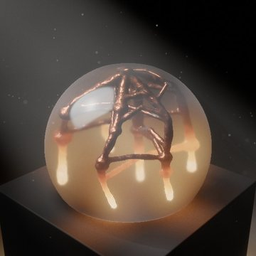
termite · paperweight · copper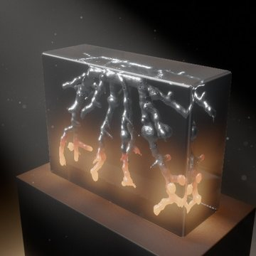
dendritic · slab · aluminum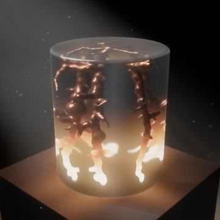
dendritic · cylinder · copper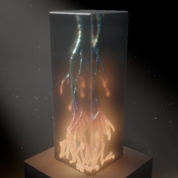
shaft · column · bismuth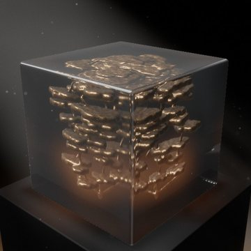
antcast · cube · bronze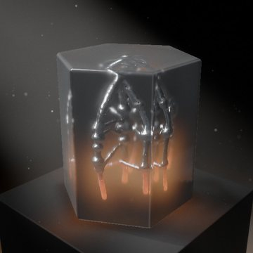
termite · hex · aluminum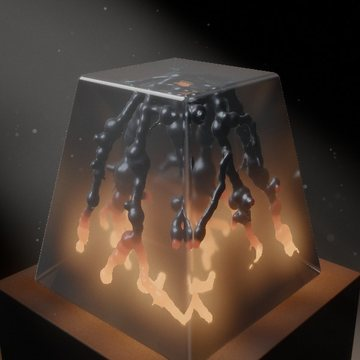
brood · monolith · iron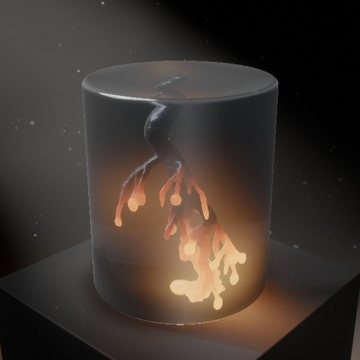
shaft · cylinder · iron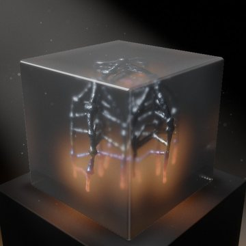
termite · cube · blued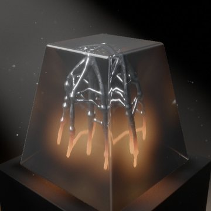
termite · monolith · aluminum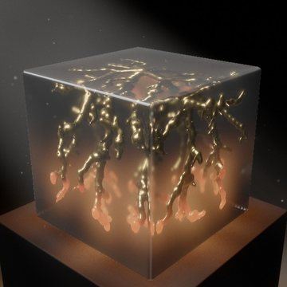
dendritic · cube · gold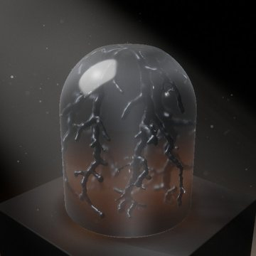
filigree · dome · iron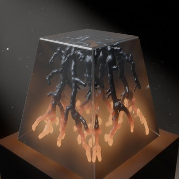
dendritic · monolith · iron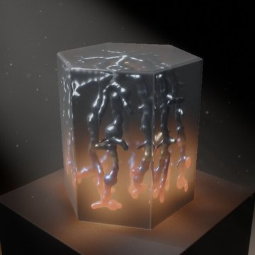
dendritic · hex · blued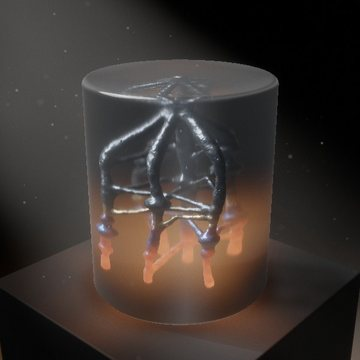
termite · cylinder · blued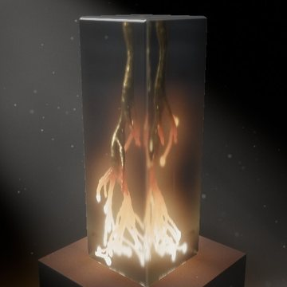
shaft · column · gold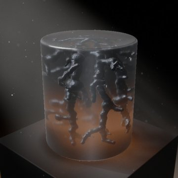
dendritic · cylinder · iron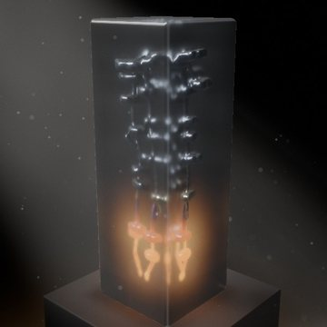
antcast · column · blued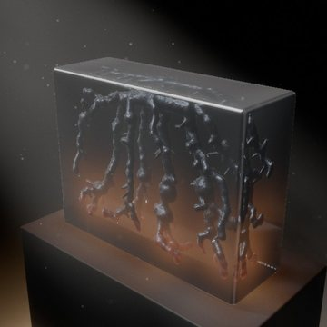
dendritic · slab · iron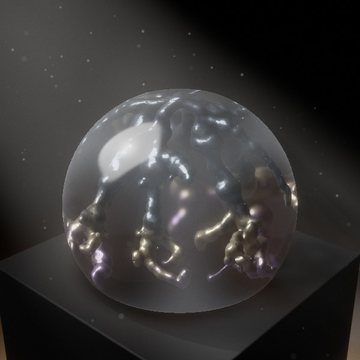
brood · paperweight · blued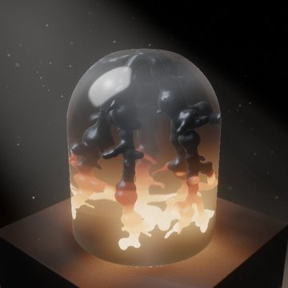
brood · dome · iron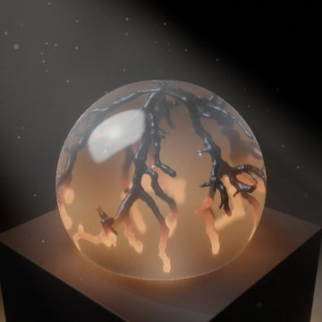
filigree · paperweight · iron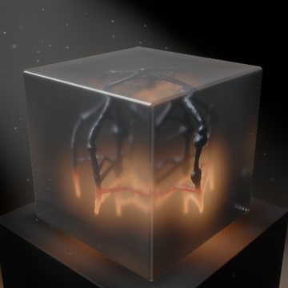
termite · cube · iron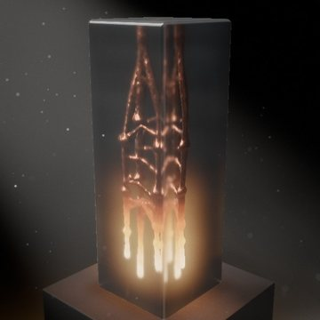
termite · column · copperA narrow band of distance
The primitives are rasterized into a cube of T³ voxels spanning ±1.65 around the block's centre: T is 96 on the low tier, 128 on medium, 144 on high and 160 for captures, so a voxel is 0.023 units on high. Each voxel stores the signed distance to the nearest metal, but only within a narrow band of 8 voxels: the distance is packed as 0.5 − d / (2 · 8 voxels), so 0.5 is the surface, 1 is deep inside and anything farther than 8 voxels saturates at 0. That is all a sphere tracer needs, since it never steps farther than the distance it reads, and it keeps the precision where the surface is.
Each primitive writes only the box of voxels within its radius plus the band and the blend. Primitives merge with a polynomial smooth minimum of width k (the table above), which welds a branch onto its parent with a fillet. Consecutive segments of one branch are tagged with the same chain and merge with a plain minimum instead, so a tunnel stays a smooth tube rather than a string of sausages. The heat blends with the same weight as the distance. Close to the surface, two octaves of value noise (at 7.5 and 17 per unit, clamped to −0.014…+0.0055) roughen the distance into a sand-cast skin.
Each voxel's four channels are written as half floats: R the distance, G the resting heat, B when the stream reaches it, A when the pool fills it. At 8 bits the distance would round to 1/255 of the band, which shows up in the normals as terracing that shimmers as the cast turns. On the high tier the texture is 144³ × 8 bytes, 23.9 MB.
A slice through the bake
The bake in two dimensions: the dendritic growth in a cube block (with 60% of the attractors, since a plane fills faster than a volume), rasterized at the medium tier's 128 voxels across the ±1.65 volume, then flooded from the hole as the day does. Left, the baked field, read with bilinear filtering as the GPU reads it; in the stream view, the dashed box is where the flood starts. Right, the pour at that moment, run through the same formula as the shader.
Finding the way down
For the metal to run through the burrow, every voxel needs to know when the stream reaches it. The bake floods the inside of the cast with Dijkstra's algorithm on the voxel grid, through the six face neighbours of every voxel within 0.010 of the surface or inside it. Seeds are the voxels within hole radius + 0.18 of the axis and 0.34 of the top, each starting at (top − y) × 0.5. Moving down costs 0.65, sideways 1.0 and up 1.5, so the front races down shafts and crawls up into side pockets, as gravity would make it. The arrival costs, divided by the largest, become the stream channel, 0 at the hole and 1 at the farthest tip; they are copied 4 voxels out into the band, so that filtering at the surface never mixes in the "unreached" value. The pool channel is simpler: height above the lowest metal, 0 at the bottom and 1 at the top.
The shader turns those two fields into a pour driven by one number, pour, rising at 0.24 a second, 4.2 s from empty to full:
The blobs are two cosine-squared trains running down the stream coordinate (4.8 and 7.6 waves along it, moving with the pour), plus a lead blob at the front; their pinch fades out between pour 0.72 and 0.95. The scales below 1 keep the combined field a safe lower bound for the tracer, since stretching distance by the field's gradient would otherwise overstep. Past pour 0.998 the shader reads the baked distance alone.
Heat comes from the same clock. A point's arrival time is the pour's own: 0.48 · (stream + 0.04) / 1.12 / 0.24 seconds. From then on it is white-hot, 1.3 · e−age/0.5, settling to molten 1.1 while the metal keeps coming. When the pour ends, each point starts to cool a little later the later it was reached (by 0.36 × its arrival time), with a time constant of 1.6 s; the resting heat baked into G, × 0.85, is the floor it cools to, so deep tips keep an ember glow.
The pour, by the clock
Top, the shader's inputs over the first 10 s of a pour. Bottom, the heat of points 0.1, 0.5 and 0.95 along the stream (thin) and of the chosen point (thick, in its colour), with the glow ramp's stops: deep red from 0.16, orange from 0.38, yellow from 0.62, white above 0.88; below 0.14 the metal no longer glows. Dashed: the cooling level that drives the crackle.
Drawn on the page, rasterized in a worker
The bake has two parts. Growing the primitives draws from the seeded Math.random, so it runs on the page, where the seed is. Rasterizing, flooding, packing and the glow volume are deterministic and heavy (about a second on high), so the primitives are posted to a module worker and the packed arrays come back as transferred buffers, with no copy. The next piece is baked while the old one lifts away; its textures are uploaded the moment they arrive, and a bake that a newer request has overtaken is thrown away. If a worker can't be made, the same function runs on the page.
Alongside the distance volume, the bake makes a 48³ RGBA8 texture. R is the ember glow: the heat of every voxel within 1.5 voxels of the metal and hotter than 0.18, raised to the power 1.45, blurred by four separable passes of a 5-tap kernel (0.08, 0.22, 0.4, 0.22, 0.08) along x, y and z, normalized and stored with a 0.72 gamma. G holds frost wisps, three octaves of value noise at 1.45 per unit, and B frost blotches, domain-warped noise, both read by the resin's volume. A third, shared 48³ texture holds tileable noise, 12 cells to its period, with its gradient precomputed into GBA, for every surface relief in the shaders. The highest metal on the axis, found by scanning the 3 × 3 central columns of the volume downward, is where the falling stream lands.
Eight blocks of resin, rising
The block is an analytic distance function in the shader, one of eight shapes, each with filleted edges. Its height is a level from 0 to 1 anchored at the plinth: the shape is cut to 2 · halfHeight · level with the fillet shrunk to fit, so the resin rises around the cast as a block whose top is always a clean bevelled face. The chamfer is the panel's (0.052 by default), capped at 0.42 of the narrower half-width.
| encasing | half-size x · y · z | fillet | plinth | notes |
|---|---|---|---|---|
| cube | 0.96 · 0.96 · 0.96 | 0.052 | 2.65 × 2.65 | rounded box |
| cylinder | 0.86 · 1.04 · 0.86 | 0.064 | 2.65 × 2.65 | rounded cylinder |
| column | 0.50 · 1.48 · 0.50 | 0.042 | 1.85 × 1.85 | tall box with strata bands (0.65) in the resin |
| hex | 0.94 · 1.02 · 0.94 | 0.048 | 2.65 × 2.65 | hexagonal prism turned 30° so three facets face the camera |
| slab | 1.24 · 0.96 · 0.42 | 0.042 | 3.10 × 1.65 | wide and thin |
| dome | 0.88 · 1.12 · 0.88 | 0.048 | 2.65 × 2.65 | a bell jar: a cylinder crowned by a hemisphere |
| monolith | 1.04 · 1.06 · 1.04 | 0.048 | 2.65 × 2.65 | a square frustum narrowing to 60% at the top, strata 0.25 |
| paperweight | 1.12 · 0.86 · 1.12 | 0.055 | 2.65 × 2.65 | a sphere of radius 1.12 with its bottom cut flat |
The plinth's top eases to each shape's size (by 1 − e−5 dt a frame) while it stands empty, and the camera's target height follows the block's half-height. The block spins about its vertical axis at the Spin rate, 0.1 rad/s by default; everything that reads the block, the glass pass, the plinth and the cast's shadow, takes the same angle.
One ray, refracted, then bounced once
The block and cast are drawn by a full-screen pass that runs as the photographic pipeline's composite, over its lit frame of the plinth and room and before its bloom. Each pixel builds its camera ray, nudged by this frame's sub-pixel jitter, and moves it into the block's spinning, lifting frame. Rays that miss the block's bounding box keep the frame as it is.
A ray first sphere-traces the block's distance function, up to 64 steps to within 0.0008, stopping at the scene's depth. Where the resin is lower than the cast, it also traces the metal in the open air above it, up to 48 steps and three bisections. Where it meets the resin, it refracts into it with the panel's index (1.5 by default; 1 while the resin is still a film), and runs the crossing:
Phase A sphere-traces the cast's distance volume, at most 48 steps of 0.9 × the distance (never under 0.007), each also kept within the room left to the resin's surface. A hit is bisected four times so the surface carries no step rings; a ray that leaves the block finds its exit by interpolating the last two glass distances. In the box-shaped blocks the glass is only tested over the last stretch before the box exit, less the fillet. Phase B then integrates the resin's own volume along the stretch it crossed, in 6 jittered steps: a frost density of 0.10 + (0.22 + 0.34 · wisp) · frost (plus strata bands), a faint grey veil of 0.045 that in a dark room is barely lit, and the ember glow scattered by it, orange and brighter where the glow volume is hot.
If the crossing reaches metal, that is what the pixel sees. If it leaves the block instead, the far face splits it with Schlick's Fresnel: what leaves samples what lies beyond, the lit frame reprojected 1.4 units on (or the plinth top, where the ray heads down onto it), and what the face mirrors runs a second crossing back across the block. That bounce has 36 steps and 3 volume steps and ignores the metal: it carries only the glow and what is beyond its own exit, so its copies of the inside stay soft instead of repeating every edge of the cast. A frosted face scatters most of what it would mirror, so the bounce is kept at mix(0.2, 0.04, frost). Light along the first crossing is absorbed by e−(0.26, 0.24, 0.22)·path, a slight warm tint.
A ray through the cube
The cube block in section (half-size 0.96, fillet 0.052). Line widths follow the weights the shader gives each part: the front face's own reflection, the light leaving the far face, and the mirrored part, which crosses again at mix(0.2, 0.04, frost) (frost 0.45 here). With metal in the way the first crossing stops on it and no bounce runs; the bounce never stops on metal.
The pass writes the interior colour and, in alpha, a blur amount for the frost pass. It grows with how deep the ray went: the distance to the metal, or for a ray that crosses, first crossing + 0.52 × the bounce + 0.14, divided by the block's width, through smoothstep(0.05, 0.78, ·), scaled by the frost and by the face's local frost (0.45 ± 0.15 of slow noise, up to 0.22 more toward the edges), with a floor of 0.012. A metal hit in the open air writes its negative distance instead, so the passes after it know where the beam must stop.
Sand-cast, poured hot
Wherever a ray lands on metal it is shaded once, at the end of the pass, from a normal taken by four tetrahedral taps of the pour's distance 0.75 voxels apart. Three octaves of the shared noise, at 1.8, 6.5 and 19.5 times its period per unit, bend that normal into sand-cast relief and pit the albedo and roughness. The two finer octaves fade out once their features shrink under 3 to 1.5 pixels, measured from the pixel's angular size, and roughness rises to stand in for what they would have scattered, so the relief never sparkles. With Bubbles above 0, three layers of hashed cells at 18, 34 and 58 per unit carve round gas pores, each a bowl-shaped normal with its own darkening, and each layer only where its pores are larger than a few pixels. Undersides (normals pointing down) are smoother and brighter, as the smoothest skin of a casting is the one that cooled against the mould's floor.
Light is a GGX highlight from the key, the studio environment's prefiltered reflection, a little diffuse for the less metallic finishes, two ambient-occlusion taps along the normal at 0.045 and 0.12, and a warm bounce from the glow volume just outside the surface. Heat changes the material: as the temperature rises from 0.14 to 0.55 the albedo falls to 18%, and in the molten zone (0.22 to 0.85) the roughness goes to 0.22 and the metalness to 0.25, a liquid rather than a metal. It then emits ramp(temp) · temp1.7 · 3.4, through a ramp from deep red to orange, yellow and a pale white, kept moderate so the tone mapper keeps it orange. Every glow breathes between 80% and 100% at 1.45 rad/s.
| finish | colour | rough | metal | under | extra |
|---|---|---|---|---|---|
| aluminum | #e4e8ee | 0.16 | 0.98 | 0.08 | the field biologists' metal |
| bronze | #c2925c | 0.28 | 0.94 | 0.12 | |
| gold | #e0ba60 | 0.24 | 0.97 | 0.10 | |
| copper | #d47850 | 0.26 | 0.95 | 0.11 | verdigris in the occluded, unpitted recesses: turquoise, rough, barely metallic |
| iron | #3d424b | 0.44 | 0.88 | 0.22 | |
| bismuth | #c9d0dc | 0.20 | 0.96 | 0.09 | thin-film oxide: a cosine palette of the viewing angle, the noise and the height |
| blued | #7c8796 | 0.26 | 0.94 | 0.12 | temper bands from the heat and the height: straw, violet, indigo, teal |
A change of finish, frost, index or any other look eases toward its new value by 1 − e−7.5 dt on the wall clock, so it glides even while the scene is paused; nothing eases while a piece is lifting away, and a new piece starts on its values.
Sharp at the face, milky behind it
Sandblasted resin blurs what is behind it by how far behind it is: a branch touching the face reads crisp, one at the back is a smear. The frost is a screen-space gather over a pyramid of the interior pass. The pyramid halves the image three times (1/2, 1/4, 1/8, and 1/16 on Ultra), each level with a separable 9-tap Gaussian taken in 5 bilinear reads, first across in the source's own texels, then down in the half-width image's, so every texel is filtered before it is dropped. Each tap is masked to the glass (alpha above 0.008): the room around the block and the cast in open air never bleed into it, while what lies behind the block, near or far, spreads.
The final pass picks a blur per pixel. Near the face it uses the pixel's own amount; as the amount rises from 15% to 55% of the frost it moves to the amount averaged over the 1/4 level, so the blur changes smoothly across a face instead of jumping at every silhouette behind it. The width is 0.050 · amount² · 0.4 · height pixels (0.054 on Ultra), a level is chosen by its log2, and the levels are read with a cubic B-spline from four bilinear taps and blended between neighbours, so the low levels upsample without blocks. The deepest level is washed in, up to 32%, where the amount is high; and where the amount is under 12% of the frost the sharp image shows through the blur, fading out by 50%.
Resin sanded in one direction smears along it. The streaks lay the vertical onto the face and project it to the screen; along that direction the gather becomes 9 taps over ±3 · streak · length times the blur, weighted by e−2s², and across it the blur narrows to half. Each tap is blurred at least as wide as the gap between taps, so the streak is continuous; level faces, where the vertical lies flat, get none.
Blur by depth
Against the depth the ray reached in the cube (0 to its full width, 1.92). Top: the blur amount the interior pass writes, the gather's width in pixels for a 1080-pixel-tall frame (right axis), and how much of the sharp image is kept. Bottom: the same strokes at every depth, a 300 × 100 crop of a 1080p frame, blurred by those widths, stretched down the face by the streaks and mixed back toward sharp near the face.
Satin, Fresnel and bevels
Over the frosted interior, the final pass traces the block once more for its front face and shades the surface itself. Its normal carries a fine sanded grain, hashed per cell at 320 cells a unit and gone where a cell gets smaller than a pixel. Reflection follows a Schlick curve from the index (F0 = 0.04 at 1.5) with an exponent of 3.8, of the studio environment at a roughness from 0.03 to 0.46 with the frost, mixed with a crisp reflection where the face turns into a bevel. The bevels are where the normal is most diagonal: they reflect more, take a tighter key highlight (power mix(220, 22, frost) × 3.2) and a cool catchlight, and keep less grain, as the polished edges of a cast block do.
The plinth shows in the faces' reflection: the reflected ray is intersected with the plinth's box, and the hit takes its colour from the lit frame where that point is on screen and unhidden (blended by how closely the frame's surface there matches it, so the switch never flickers), else dark slate warmed by the embers. When the resin is below its full level, its top face also reflects the exposed cast above it, traced in up to 24 steps.
The face itself is a light satin film: grey lit by the key and the environment, heavier toward the edges, at grazing angles and on the top, up to half opaque, warmed where the glow volume sits right behind the face; the bottom rim glows faintly where the embers sit close to the plinth.
A plinth in a dark room
The room is the shared photographic pipeline: a background of #131417, exposure 1.05, bloom 0.14, vignette 0.28, grain 0.024, and a studio key from (−0.62, 0.85, 0.42) at 8.5 with a cool fill of 0.12. The backdrop is a seamless cyclorama, a lathe of 64 segments: a flat floor 1.85 below the plinth top out to 6.5 from the centre, a cove of radius 4.5 and a wall at 11. The plinth is a chamfered slate box, 2.65 wide and 1.78 tall, floating 0.07 above the floor on a black toe set in by 0.09, whose top edge holds a warm strip (emissive at 30×) that pools on the floor in three falloffs and glows back up the plinth's lowest edges.
The plinth and backdrop are lit only inside the spot's cone, plus as much of the room as Room light lets in (0.12). The resin's shadow on the plinth is worked out in the plinth's own shader: a ray toward the spot is clipped to the block's box and sampled 16 times, each step adding how much of it lies inside the block, softened by the lamp's size. The shadow deepens with that length of resin, 0.25 · smoothstep(0, 0.06, L) + 0.6 · (1 − e−0.8 L), so it is smooth and steady rather than speckled. A contact shadow hugs the block's footprint, fading as the block lifts, and the embers spill onto the plinth top from two reads of the glow volume, low and mid-height, as sharp pools under a bare cast and a soft wash through resin.
The metal casts its shadow through the pipeline's shadow map. An invisible box around the block exists only in the shadow pass, where its shader marches the cast's distance volume away from the key (64 steps up to 4.5 units) and is opaque wherever it meets metal, only what the front has reached during a pour. The pipeline's PCSS then softens it, with a light size of 0.018 and a filter disc of at least 7 texels.
A beam of lit dust
The spot hangs 6.8 units up the key direction from a point at 65% of the block's half-height, and points back down it. Its beam is lit haze along the view ray. The ray is clipped to a sphere of radius 6.2 around the cone, and to the first thing it meets (the glass's front, the metal in the open air, or the frame's depth), then sampled 20 times with a per-pixel jitter. Each sample takes the cone's soft edge (smoothstep(0.966, 0.99, cos), full inside 8.1°, gone at 15°), a falloff that rises out of the dark near the lamp and then thins slowly, slow-drifting noise for haze, and the spot's visibility: zero behind the plinth, dimmed to 70–30% by the resin with the level, and shadowed by the cast through 8 steps of its distance. The sum is weighted by a Henyey-Greenstein phase with g = 0.45, relative to isotropic, so looking into the lamp the beam is 4.8× what an even scatter would give, 0.6× across it and 0.26× looking away. Inside the glass's silhouette it counts at 65%.
Dust motes live on a grid of 0.16-unit cells, one in 22 cells holding one. The ray walks the cells within ±2.6 of where it passes closest to the beam's axis, at most 64, with a 3D DDA. A mote sits jittered in its cell, wanders on its own and drifts with the air; its size is 0.5 to 2.6 pixels with a cubed hash, so most are faint specks and a few are flakes. It blurs into a disc of |distance − focus| × 0.018, holding the same light, with the focus at the piece; and 60% of the flakes tumble, glinting with a sixth power of two beating sines.
Where the beam lands on the plinth, floor or backdrop, the surface brightens inside a slightly wider cone, as much as the room light lets in, shadowed by the glass and the cast along the key so it lines up with the key's own shadow.
The beam in section
A 2D section through the beam's axis with the cube block at full resin: the cone's light per point (edge, falloff and visibility, without the haze), the bounding sphere (dashed), and one view ray: its 20 samples sized by what each adds, and the cells it walks around its closest approach to the axis, with the motes they hold drawn at their blur. In 3D, a mote counts when the ray passes within its disc. Inset: the phase lobe, the circle being isotropic, and the ray's angle to the lamp.
Its own temporal resolve
The glass pass runs once per pixel, so its edges, highlights and thin branches would alias. Each frame its rays are offset by a Halton (2, 3) point, an 8-frame cycle within ±½ pixel, and a resolve blends this frame with the last one at the same point of the glass. The final pass writes how far along the ray the glass's front face is; the resolve rebuilds that point, undoes this frame's lift and spin about the vertical axis, projects it with last frame's camera, and reads the history there.
The variance clip keeps the history within this frame's neighbourhood, so a highlight that comes and goes with the jitter holds steady without ghosting. While the resin level or the pour changes, last frame shows a different shape, so the history is not used at all. Off the glass the frame passes through unblended.
One call site per heavy function
On Windows, Chrome runs WebGL through ANGLE, which translates each shader to HLSL for Direct3D's FXC compiler. FXC inlines every function at every place it is called and unrolls loops whose bounds it can see, so a function called from three places is compiled three times, and a big shader can take many seconds. The day's shaders are written so each heavy function appears once. The way into the block and the bounce back across it are two iterations of one loop around crossing(); the metal hits from the open air and the crossings are stored in two slots and shaded by one loop at the end; the four tetrahedral taps of every normal are a loop over one call of the distance; the AO taps and the bisections are loops too. Every loop bound adds uLoop, a uniform that is always 0, which the compiler can't see through, so the loops stay loops. All four passes compile in parallel behind the loading pill.
Empty, pour, cool, rest, lift
Each piece is a small state machine. Empty: the plinth stands bare for 0.8 s while it eases to the new piece's size. Pour: the pour rises at 0.24 a second, and a molten stream, an open cylinder 0.022 to 0.03 wide and emissive at (26, 10, 2.4), falls into the crown of the cast, wobbling and thinning to nothing between pour 0.85 and 0.97. Cool: after 0.8 s the resin rises over 5.5 s on a smoothstep, its level chased at 1 − e−2 dt. Rest: the finished piece waits, and auto change counts its 14 s only now. Lift: the piece rises 9 units in 1.8 s on a cubic and is held out of view until the next bake has arrived; then the new volume goes in and the cycle starts over. P replays the current cast through the same lift; scrubbing the Pour slider jumps straight to rest with the resin up.
Left alone for 6 s, the camera starts to orbit, fading in over 3 s. During the pour and the lift it circles wide, 5.2 ± 2.0 units out, rising and dipping; once the metal starts cooling it draws in over 2.5 s to 3.2 + the block's half-height (± 0.25), lower and a little faster round (0.20 instead of 0.12 rad/s), to show the cast through each face. Its target drifts back to the plinth's axis, pans are kept within 1.5 of it, and the distance within 2 to 8.5, inside the cyclorama.
One piece, start to finish
The cycle simulated with the day's code and constants at 60 fps, the camera left alone. The lift waits at the top for the bake if it takes longer than 1.8 s; the sizzle marks the moment the stream starts.
Gloop, sizzle, crackle
The sound is two looping beds that follow the cast. While the stream runs, a thick gloopy bubbling plays at 0.75 × flow, one of three takes picked per pour and started from a random point, through a lowpass that opens from 700 to 2200 Hz with the flow; a soft sizzle, pitched 0.9 to 1.05, marks the moment it starts. As the cast cools, a crackle plays at 0.7 × cooling1.5, where cooling falls from 1 to 0 over the 2.9 s after the pour ends; it is one of two takes of bread crackling as it leaves the oven. Beds rise with a 0.08 s time constant, fall with 0.4 s, and stop 2 s after going silent. Everything goes through a compressor (−16 dB, 3:1) and an 18% send to a 1.6 s generated room tail. Nothing plays before the first frame; variations draw from the unseeded random so they never shift the seeded burrow.
Fast and Ultra
The panel's Glass Detail trades the glass pass's cost for smoothness; the pipeline's quality tier sets the volume's resolution.
| setting | Fast (default) | Ultra |
|---|---|---|
| resin volume steps | 6, bounce 3 | 12, bounce 6 |
| frost pyramid | 3 levels (to 1/8) | 4 levels (to 1/16) |
| frost width | 0.050 | 0.054 |
| seed bubbles in the resin | none | 0.8% of 1/18-unit cells, radius 0.0055 |
| pipeline tier | volume | voxel | band | memory |
|---|---|---|---|---|
| low | 96³ | 0.034 | 0.275 | 7.1 MB |
| medium (phones) | 128³ | 0.026 | 0.206 | 16.8 MB |
| high (desktops) | 144³ | 0.023 | 0.183 | 23.9 MB |
| capture | 160³ | 0.021 | 0.165 | 32.8 MB |
Controls
- Drag to orbit, scroll or pinch to zoom. Left alone 6 s, the camera circles the piece by itself (Idle orbit).
- R (or the dice) casts a new piece: the old one lifts away first. P replays this piece's cast.
- E toggles excavate: the resin sinks away, or rises back.
- Archetype, Encasing, Finish, Complexity (0.2–1): what is cast. Changing the first two or the complexity starts a new piece.
- Level, Chamfer, Frost, Streaks, Streak length, Refraction (1.1–1.9): the resin.
- Heat (0–1.5), Grain, Bubbles, Pour: the metal. Spotlight, Room light, Base light: the gallery. Glass Detail, Spin.
- M or the speaker button toggles sound, Space pauses, F goes fullscreen, Tab hides the panel.
- Each piece rests 14 s before a new one is cast (Auto change).